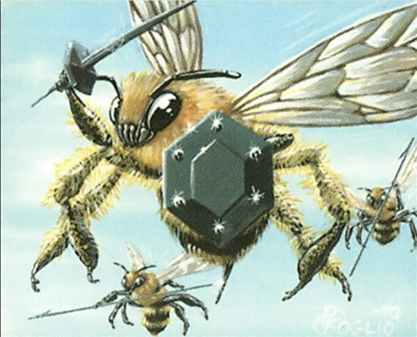

Capa de orquestacion multi-agente para Claude Code
Trust Firewall
Auto-approve 80%+ de tool calls
DONEPeer Review + ELO
Calidad medible entre agentes
DONEMission Bridge
Spawn → Work → Review → ELO
DONEOutput Filtering
Token savings automatico
DONEv0.3.0 | 4 crates Rust | 20 MCP tools | Hooks + MCP + YAML
Cada Read, Grep, git status pide aprobacion. Aceptas 70 sin pensar. Despues te perdes el que importa.
Sin control granular: o confias en todo, o aprobas todo manualmente. No hay termino medio.
Un agente produce codigo, otro produce mas codigo. Nadie revisa nada. Confias en el output porque estas cansado, no porque fue validado.
No hay peer review entre agentes. No hay metricas. No hay senial de calidad.
Los findings de una sesion desaparecen. La siguiente auditoria arranca de cero. No se acumula conocimiento entre misiones.
Cada sesion es una isla. Sin playbook, sin workflow repetible, sin historia.
Estimacion: ~70% de los prompts en una sesion CC multi-agente son ruido de permisos. El resto es trabajo real.
Situacion: Incidente de seguridad activo. 4 agentes en paralelo: analisis de logs, revision de codigo afectado, busqueda de IOCs, redaccion de postmortem.
Sin Colmena: ~120 prompts manuales mientras el clock del incidente corre. El humano es relay entre agentes.
Con Colmena: Trust rules por rol (el de logs corre queries en Splunk, el de codigo solo lee). El humano aprueba solo acciones criticas. Peer review del postmortem asegura calidad. Findings quedan para futuras investigaciones.
Situacion: Auditoria SOC2 + PCI-DSS + ISO 27001 simultanea. Un agente por framework con rubrica especifica.
Sin Colmena: Findings duplicados entre frameworks. El humano copia manualmente "este gap de access control tambien impacta PCI req 7". Sin visibilidad de calidad.
Con Colmena: Findings se persisten en el store — cualquier agente los consulta cross-framework. ELO muestra que auditor es mas confiable para que dominio. Patron oracle-workers coordina.
Colmena no reemplaza herramientas especializadas de security testing. Orquesta agentes de CC para que trabajen juntos con trust, calidad y memoria.
Construida sobre CC, no alrededor. Usa mecanismos oficiales: hooks, MCP, Agent tool, CLAUDE.md.
Evalua cada tool call contra reglas YAML. Decide allow, deny o ask en <15ms. Sin llamadas de red.
Filtra outputs de Bash: strip ANSI, dedup lineas repetidas, truncado inteligente. Ahorra tokens automaticamente.
CC llama 20 herramientas nativamente: patterns, misiones, reviews, ELO, findings, stats, calibracion.
Todo filesystem. Sin DB, sin Docker, sin servicios. 4 crates Rust: core, cli, filter, mcp.
Cada tool call pasa por el firewall antes de ejecutarse. Reglas evaluadas en orden de precedencia estricto.
Cualquier falla del hook retorna "ask", nunca "deny". El humano siempre tiene la ultima palabra en casos borde.
| Sin Colmena | Con Colmena | |
|---|---|---|
| Prompts de permisos | ~100 | ~30 |
| Proteccion force push | Ninguna | Regla blocked |
| Operaciones de lectura | Piden permiso | Auto-aprobadas |
| Granularidad de confianza | Binaria: todo o nada | 6 niveles |
| Delegacion en runtime | No existe | TTL-scoped, max 24h |
| Audit trail | Ninguno | Cada decision logueada |
Sesion de ~3 horas. Threat model STRIDE/DREAD, 4 squads paralelos, 8 fixes de seguridad.
1,335 de 1,675 tool calls sin preguntarle al humano
Comandos destructivos frenados automaticamente
Agentes unicos gestionados en la sesion
4 squads en worktrees aislados, zero colisiones
Un agente AppSec corrio STRIDE+DREAD (25 amenazas). Un Security Architect hizo validacion independiente. Se armaron 4 dev squads priorizados por ownership de archivos. Los 4 corrieron en paralelo. Merge limpio.
DREAD maximo: 9.4 → 6.2 post-fix. 0 findings Critical. 0 findings High. 184 tests, clippy limpio. Todo en una sesion con un humano.
Los roles definen que hace cada agente. Los patterns definen como se coordinan. El mission generator conecta ambos.
"Auditar PCI-DSS compliance de la payments API"
Evalua 6 patterns, retorna los mejores matches con asignacion de roles
Crea CLAUDE.md por agente + asigna reviewer lead por ELO + instrucciones de review
Humano ejecuta CLI commands para activar permisos scoped (read-only MCP)
CC lanza sub-agentes → trabajan → review_submit → reviewer evalua → ELO actualizado
Evaluacion cruzada estructurada entre agentes. Reviews producen findings, scores, y decisiones de trust gate.
El autor envia artefacto + hash SHA256 para revision
Se selecciona reviewer elegible (invariantes enforced)
Reviewer puntua en N dimensiones + lista findings
avg >= 7.0 y sin findings criticos --> auto-complete | sino --> revision humana
Cada review produce findings estructurados que se acumulan entre misiones. La tercera auditoria de payments API se beneficia de las dos anteriores.
Log JSONL append-only: no mutacion, no eliminacion. Cada cambio de rating es trazable a un review y mision especificos.
El humano describe la mision. Colmena recomienda un pattern de orquestacion con roles asignados.
El mission generator crea CLAUDE.md por agente con contexto, restricciones y reglas de coordinacion.
CC usa Agent tool para lanzar sub-agentes en la misma sesion. Cada agente recibe sus instrucciones generadas.
Los agentes producen artefactos. El protocolo de peer review valida calidad. Trust gate decide si se necesita aprobacion humana.
ELO actualizado. Findings almacenados. La proxima mision arranca con conocimiento acumulado y ratings calibrados.
Hardening via analisis STRIDE+DREAD. Cada componente construido con least-privilege y auditabilidad.
Self-review bloqueado. Pairing anti-reciproco. Hashing de artefactos. Minimo de dimensiones de score. Findings criticos escalan. Score floor en 5.0.
Sin llamadas de red en el hook path. Sin bases de datos. Sin Docker. Todo filesystem-based y git-versionable. Superficie de ataque minima.
Firewall config_check, evaluate, delegate, delegate_list, delegate_revoke, queue_list
Library library_list, library_show, library_select, library_generate, library_create_role
Review review_submit, review_list, review_evaluate
ELO elo_ratings, findings_query, findings_list
Ops mission_deactivate, calibrate, session_stats
Rust 2021, rmcp (MCP stdio), serde, clap, tokio, regex pre-compilado. 4 crates: core, cli, filter, mcp
M0 Trust Firewall
Reglas YAML, auto-approve ~70%, audit trail, hook + queue
M0.5 + M1 MCP + Wisdom Library
Workspace refactor, MCP server, 4 roles, 6 patterns, mission generator
M2 Peer Review + ELO + Findings
Cross-review, trust gate, ELO con temporal decay, findings store
M3 Dynamic Trust + Security Hardening
ELO calibration, STRIDE/DREAD hardening (8 fixes), output filtering, session stats
M3.5 Mission Bridge
ELO reviewer lead, review instructions en CLAUDE.md, pipeline spawn → review → learn
M4 Mentor Prompt Refinement
Debate pattern para mejora de prompts. Agentes sugieren, humanos deciden.
Repositorio
github.com/4rth4S/colmena
Stack
Rust + MCP + YAML
v0.3.0
4 crates, 184 tests, 20 MCP tools
built with ❤️🔥 by AppSec